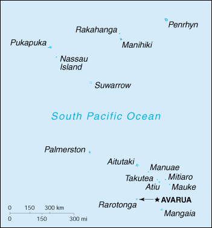

(self-governing in free association with New Zealand)

|
Cook Islands (self-governing in free association with New Zealand) |
|
| Introduction Geography People Government Economy Communications Transportation Military Transnational Issues | ||
|  | ||
| Cook Islands | Introduction | Top of Page |
| Background: | Named after Captain Cook, who sighted them in 1770, the islands became a British protectorate in 1888. By 1900, administrative control was transferred to New Zealand; in 1965 residents chose self-government in free association with New Zealand. The emigration of skilled workers to New Zealand and government deficits are continuing problems. |
| Cook Islands | Geography | Top of Page |
| Location: | Oceania, group of islands in the South Pacific Ocean, about one-half of the way from Hawaii to New Zealand |
| Geographic coordinates: | 21 14 S, 159 46 W |
| Map references: | Oceania |
| Area: |
total:
240 sq km
land: 240 sq km water: 0 sq km |
| Area - comparative: | 1.3 times the size of Washington, DC |
| Land boundaries: | 0 km |
| Coastline: | 120 km |
| Maritime claims: |
continental shelf:
200 NM or to the edge of the continental margin
exclusive economic zone: 200 NM territorial sea: 12 NM |
| Climate: | tropical; moderated by trade winds |
| Terrain: | low coral atolls in north; volcanic, hilly islands in south |
| Elevation extremes: |
lowest point:
Pacific Ocean 0 m
highest point: Te Manga 652 m |
| Natural resources: | NEGL |
| Land use: |
arable land:
9%
permanent crops: 13% permanent pastures: 0% forests and woodland: 0% other: 78% (1993 est.) |
| Irrigated land: | NA sq km |
| Natural hazards: | typhoons (November to March) |
| Environment - current issues: | NA |
| Environment - international agreements: |
party to:
Biodiversity, Climate Change, Desertification, Law of the Sea
signed, but not ratified: Climate Change-Kyoto Protocol |
| Cook Islands | People | Top of Page |
| Population: | 20,611 (July 2001 est.) |
| Age structure: |
0-14 years:
NA%
15-64 years: NA% 65 years and over: NA% |
| HIV/AIDS - adult prevalence rate: | NA% |
| HIV/AIDS - people living with HIV/AIDS: | NA |
| HIV/AIDS - deaths: | NA |
| Nationality: |
noun:
Cook Islander(s)
adjective: Cook Islander |
| Ethnic groups: | Polynesian (full blood) 81.3%, Polynesian and European 7.7%, Polynesian and non-European 7.7%, European 2.4%, other 0.9% |
| Religions: | Christian (majority of populace are members of the Cook Islands Christian Church) |
| Languages: | English (official), Maori |
| Literacy: |
definition:
NA
total population: 95% male: NA% female: NA% |
| Cook Islands | Government | Top of Page |
| Country name: |
conventional long form:
none
conventional short form: Cook Islands former: Harvey Islands |
| Dependency status: | self-governing in free association with New Zealand; Cook Islands is fully responsible for internal affairs; New Zealand retains responsibility for external affairs, in consultation with the Cook Islands |
| Government type: | self-governing parliamentary democracy |
| Capital: | Avarua |
| Administrative divisions: | none |
| Independence: | none (became self-governing in free association with New Zealand on 4 August 1965 and has the right at any time to move to full independence by unilateral action) |
| National holiday: | Constitution Day, first Monday in August (1965) |
| Constitution: | 4 August 1965 |
| Legal system: | based on New Zealand law and English common law |
| Suffrage: | NA years of age; universal adult |
| Executive branch: |
chief of state:
Queen ELIZABETH II (since 6 February 1952), represented by Apenera SHORT (since NA); New Zealand High Commissioner Jon JONESSEN (since NA January 1998), representative of New Zealand
head of government: Prime Minister Dr. Terepai MAOATE (since 18 November 1999); Deputy Prime Minister Norman GEORGE (since NA) cabinet: Cabinet chosen by the prime minister; collectively responsible to Parliament elections: none; the monarch is hereditary; the UK representative is appointed by the monarch; the New Zealand high commissioner is appointed by the New Zealand Government; following legislative elections, the leader of the party that wins the most seats usually becomes prime minister note: ten years of rule by the Cook Islands Party (CIP) came to an end 18 November 1999 with the resignation of Prime Minister Joe WILLIAMS; WILLIAMS had led a minority government since October 1999 when the New Alliance Party (NAP) left the government coalition and joined the main opposition Democratic Alliance Party (DAP); on 18 November 1999, DAP leader Dr. Terepai MAOATE was sworn in as prime minister |
| Legislative branch: |
unicameral Parliament (25 seats; members elected by popular vote to serve five-year terms)
elections: last held NA June 1999 (next to be held by NA 2004) election results: percent of vote by party - NA%; seats by party - CIP 12, DAP 12, NAP 1 note: the House of Ariki (chiefs) advises on traditional matters, but has no legislative powers |
| Judicial branch: | High Court |
| Political parties and leaders: | Cook Islands People's Party or CIP [Tai CARPENTER]; Democratic Alliance Party or DAP [Terepai MAOATE]; New Alliance Party or NAP [Norman GEORGE] |
| Political pressure groups and leaders: | NA |
| International organization participation: | ACP, AsDB, ESCAP (associate), FAO, ICAO, ICFTU, IFAD, Intelsat (nonsignatory user), IOC, OPCW, Sparteca, SPC, SPF, UNESCO, WHO, WMO |
| Diplomatic representation in the US: | none (self-governing in free association with New Zealand) |
| Diplomatic representation from the US: | none (self-governing in free association with New Zealand) |
| Flag description: | blue, with the flag of the UK in the upper hoist-side quadrant and a large circle of 15 white five-pointed stars (one for every island) centered in the outer half of the flag |
| Cook Islands | Economy | Top of Page |
| Economy - overview: | Like many other South Pacific island nations, the Cook Islands' economic development is hindered by the isolation of the country from foreign markets, the limited size of domestic markets, lack of natural resources, periodic devastation from natural disasters, and inadequate infrastructure. Agriculture provides the economic base with major exports made up of copra and citrus fruit. Manufacturing activities are limited to fruit processing, clothing, and handicrafts. Trade deficits are made up for by remittances from emigrants and by foreign aid, overwhelmingly from New Zealand. In the 1980s and 1990s, the country lived beyond its means, maintaining a bloated public service and accumulating a large foreign debt. Subsequent reforms, including the sale of state assets, the strengthening of economic management, the encouragement of tourism, and a debt restructuring agreement, have rekindled investment and growth. |
| GDP: | purchasing power parity - $100 million (1999 est.) |
| GDP - real growth rate: | NA% |
| GDP - per capita: | purchasing power parity - $5,000 (1999 est.) |
| GDP - composition by sector: |
agriculture:
18%
industry: 9% services: 73% (1995) |
| Population below poverty line: | NA% |
| Household income or consumption by percentage share: |
lowest 10%:
NA%
highest 10%: NA% |
| Inflation rate (consumer prices): | 1.6% (1999 est.) |
| Labor force: | 6,601 (1993) |
| Labor force - by occupation: | agriculture 29%, industry 15%, services 56% (1995) note - shortage of skilled labor |
| Unemployment rate: | NA% |
| Budget: |
revenues:
$25 million
expenditures: $23 million, including capital expenditures of $NA (FY 99/00) |
| Industries: | fruit processing, tourism, fishing |
| Industrial production growth rate: | NA% |
| Electricity - production: | 21 million kWh (1999) |
| Electricity - production by source: |
fossil fuel:
100%
hydro: 0% nuclear: 0% other: 0% (1999) |
| Electricity - consumption: | 19.5 million kWh (1999) |
| Electricity - exports: | 0 kWh (1999) |
| Electricity - imports: | 0 kWh (1999) |
| Agriculture - products: | copra, citrus, pineapples, tomatoes, beans, pawpaws, bananas, yams, taro, coffee; pigs, poultry |
| Exports: | $3 million (f.o.b., 1999 est.) |
| Exports - commodities: | copra, papayas, fresh and canned citrus fruit, coffee; fish; pearls and pearl shells; clothing |
| Exports - partners: | Japan 42%, New Zealand 25%, US 9%, Australia 9% (1999) |
| Imports: | $85 million (c.i.f., 1994) |
| Imports - commodities: | foodstuffs, textiles, fuels, timber, capital goods |
| Imports - partners: | NZ 70%, Australia 8% (1999) |
| Debt - external: | $141 million (1996 est.) |
| Economic aid - recipient: | $13.1 million (1995); note - New Zealand continues to furnish the greater part |
| Currency: | New Zealand dollar (NZD) |
| Currency code: | NZD |
| Exchange rates: | New Zealand dollars per US dollar - 2.2502 (January 2001), 2.1863 (2000), 1.8886 (1999), 1.8632 (1998), 1.5083 (1997), 1.4543 (1996) |
| Fiscal year: | 1 April - 31 March |
| Cook Islands | Communications | Top of Page |
| Telephones - main lines in use: | 5,000 (1997) |
| Telephones - mobile cellular: | 0 (1994) |
| Telephone system: |
general assessment:
NA
domestic: the individual islands are connected by a combination of satellite earth stations, microwave systems, and VHF and HF radiotelephone; within the islands, service is provided by small exchanges connected to subscribers by open wire, cable, and fiber-optic cable international: satellite earth station - 1 Intelsat (Pacific Ocean) |
| Radio broadcast stations: | AM 1, FM 2, shortwave 0 (1998) |
| Radios: | 14,000 (1997) |
| Television broadcast stations: | 2 (plus eight low-power repeaters) (1997) |
| Televisions: | 4,000 (1997) |
| Internet country code: | .ck |
| Internet Service Providers (ISPs): | 3 (2000) |
| Internet users: | NA |
| Cook Islands | Transportation | Top of Page |
| Railways: | 0 km |
| Highways: |
total:
320 km (1992)
paved: NA unpaved: NA |
| Waterways: | none |
| Ports and harbors: | Avarua, Avatiu |
| Merchant marine: |
total:
1 ship (1,000 GRT or over) totaling 2,310 GRT/2,181 DWT
ships by type: cargo 1 (2000 est.) |
| Airports: | 7 (2000 est.) |
| Airports - with paved runways: |
total:
1
1,524 to 2,437 m: 1 (2000 est.) |
| Airports - with unpaved runways: |
total:
6
1,524 to 2,437 m: 3 914 to 1,523 m: 3 (2000 est.) |
| Cook Islands | Military | Top of Page |
| Military - note: | defense is the responsibility of New Zealand, in consultation with the Cook Islands and at its request |
| Cook Islands | Transnational Issues | Top of Page |
| Disputes - international: | none |
{kind=link}